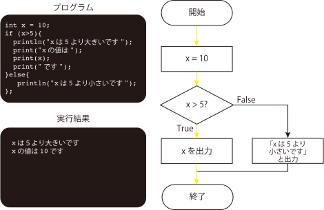

条件分岐
プログラムではifを用いて、条件分岐、つまり、条件を指定して実行するプログラムの制御ができます。 プログラムでは以下のような書き方をします。
if(条件式){
条件式がTrueの時に実行するプログラム;
}else{
条件式がFalseの時に実行するプログラム;
}
条件式がTrueになるとき、ifの{}内に記述されたプログラムが実行されます。 Falseの場合はelseの{}内に記述されたプログラムが実行されます。 なお、複数の条件を使って条件分岐を行うときはifとelseの間に、else if(条件式){実行プログラム}を書くことで、 さらに条件分岐することができます。
if(条件式1){
条件式1がTrueの時に実行するプログラム;
}else if(条件式2){
条件式1がFalseかつ条件式2がTrueの時に実行するプログラム;
}else{
条件式1,2が共にFalseの時に実行するプログラム;
}
下図にプログラムとフローチャートを示しています。下図はxに代入された値が5より大きいかどうかを判定するプログラムです。
等しいことを示すためにはイコールを２つ連続で書いてx==5のように表現します。また等しくない場合はx!=5と表現します。
大小比較では<, >が使用されます。もし、大小比較にイコールが含まれる場合は<=, >=が使用されます。

視覚的に見てみよう
実行ボタンを押すと、コードの動作と図解アニメーションを確認できます。
なお、ここではrandom(10)が使われています。
random(10)では0~10の数値をランダムに取得します。
このように、random(最大値)で0~最大値の小数をランダムに取得できます。
なお、random(最小値,最大値)と２つの変数を入れることで、最小値〜最大値の間の値をランダムに取得できます。
先頭に(int)をつけることで整数を取得できます。
println("xは5より大きいです");
}
println("xは5です");
}
println("xは5より小さいです");
}
アニメーション